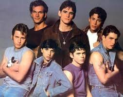
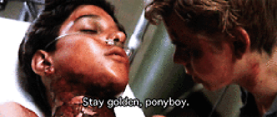

MartinLoganView profile
Johnny CadeVerified account
@Johnny follows you
The number one Outsider.
Tulsa OK USA
Joined April 1965
Tweets
- Tweets
- Tweets & replies
- Photos & videos
@Johnny is blocked
Are you sure you want to view these Tweets? Viewing Tweets won't unblock @Johnny.
Johnny Cade followed
-
-
Pinned Tweet
We are a gang. A gang that sticks up for each other. We work as a unit, as a family. We aren't hoods or socials we are greasers!!!
91 retweets 337 favorites
-
-
-
Don't hurt Ponyboy!!! He's my friend!!!
91 retweets 337 favorites
-
-
-
Ponyboy and I at an abandoned church on Jay mountain.
91 retweets 337 favorites
-
-
-
Ponyboy and I.. Heroes!?!?!?!?!?!
91 retweets 337 favorites
-
-
-
Stay gold everyone. Stay gold.
Ponyboy @ponyboyI... I told him a poem when we were in the church up on Jay mountain. It went like this:Nature's first green is gold,Her hardest hue to hold.Her early leaf's a flower; But only so an hour.Then leaf subsides to leaf,So Eden sank to grief,So dawn goes down to dayNothing gold can stay. I think Johnny was saying that we can stay gold. We just have to keep the right mindset. We should stay gold.91 retweets 337 favorites
-
@Johnny hasn't tweeted yet.
Flag this media
This has already been marked as containing sensitive content.
Who to follow
· · View all-
#win
#WIN Web Summit Tickets231K Tweets about this trend
-
#FridayForGood
5,031 Tweets about this trend
-
#ALCS
NLCS, ALCS preview with Jon Heyman28.5K Tweets about this trend
-
#TheOutfieldMovie
Fullscreen's 'The Outfield' Starring Nash Grier, Cameron Dallas to...361K Tweets about this trend
-
#MakeAFilmPrimAndProper
Just started trending
-
Last Night
After her interview with Charles Koch last night, the only question...227K Tweets about this trend
-
100 Greatest Games Ever Made
Just started trending
-
Britpop
Britpop at the BBC - BBC FourJust started trending
-
After 3
'Defiance' Canceled By Syfy After 3 Seasons8,079 Tweets about this trend